实现互联网DNS分布式架构，当客户端访问时，经各级自建DNS解析，最终指向Web1或者Web2服务器httpd服务
实验拓扑图：
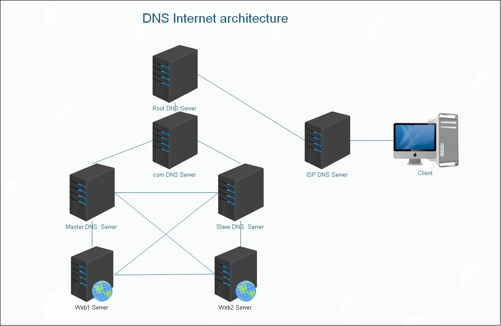
前期准备：
准备8台虚拟机，操作系统及IP地址分别为
Root DNS Server： CentOS6.9 IP：192.168.30.15
Com DNS Server： CentOS6.9 IP：192.168.30.16
Master DNS Server： CentOS6.9 IP：192.168.30.12
Slave DNS Server： CentOS6.9 IP：192.168.30.17
Web1 Server： CentOS7.4 IP：192.168.30.10
Web2 Server： CentOS6.9 IP：192.168.30.11
ISP DNS Server： CentOS6.9 IP：192.168.30.18
Client： CentOS6.9 IP：192.168.30.19
关闭所有主机的SELinux安全策略，关闭iptables防火墙
实验预期：
实现互联网DNS分布式架构，当客户端访问时，经各级DNS解析，最终指向Web1或者Web2服务器httpd服
务。
一、搭建**web**服务器：
Web1 Server：
echo welcome to magedu.com websrv1 > /var/www/html/index.html
systemctl start httpd
Web2 Server:
echo welcome to magedu.com websrv1 > /var/www/html/index.html
service httpd start
切换至Client确认web1，web2能够正常访问
Curl 192.168.30.10
Curl 192.168.30.11
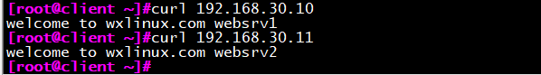
二、搭建主**DNS**服务器：
yum install bind
vim /etc/named.conf
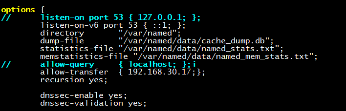
vim /etc/named.rfc1912.zones
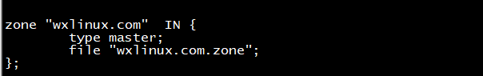
vim /var/named/wxlinux.com.zone
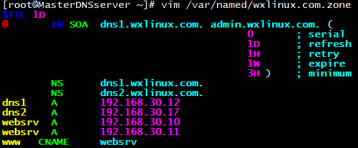
切换到Client测试主DNS服务器：
dig www.wxlinux.com @192.168.30.12
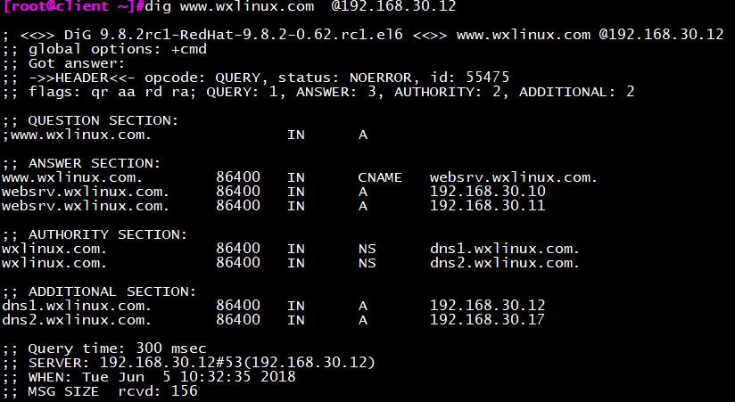
三、搭建从**DNS**服务器
vim /etc/named.conf
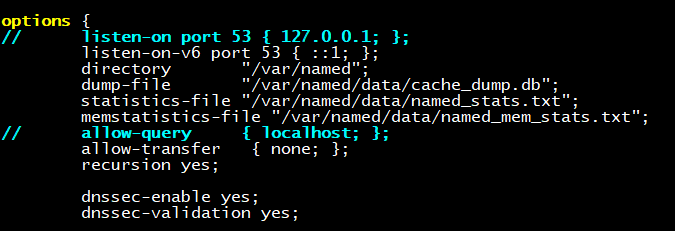
vim /etc/named.rfc1912.zones
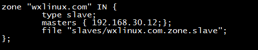
启动named服务，确认slave文件生成：
service named start
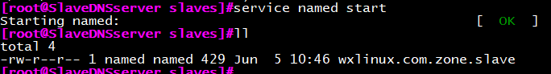
切换到Client测试从DNS服务器：
dig www.wxlinux.com @192.168.30.17
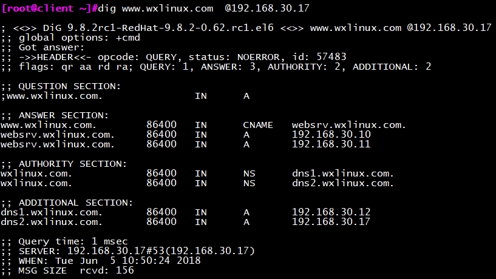
四、搭建**com**服务器
vim /etc/named.conf
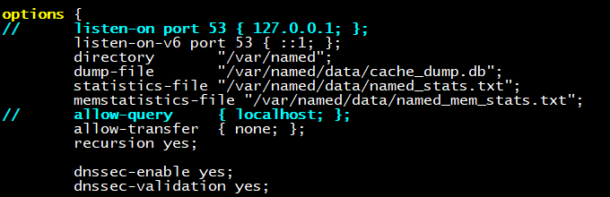
vim /etc/named.rfc1912.zones
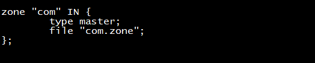
vim com.zone
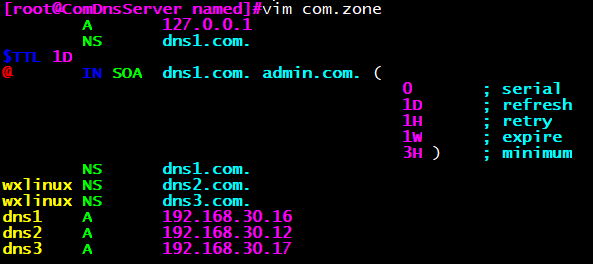
切换到Client测试从Com服务器：
dig www.wxlinux.com @192.168.30.16
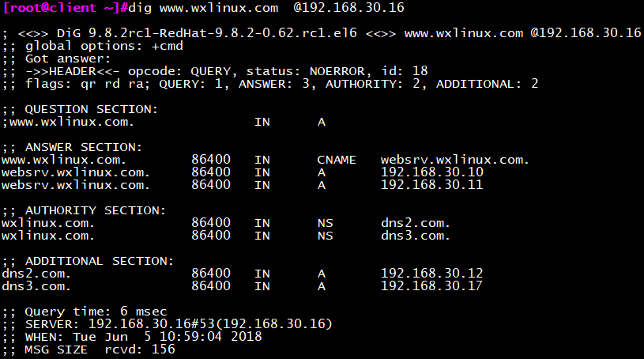
五、搭建根**DNS**服务器
vim /etc/named.conf
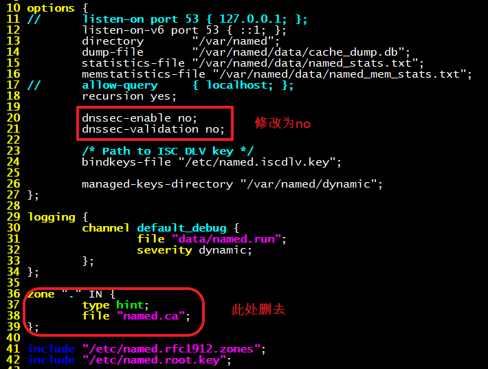
vim /etc/named.rfc1912.zones
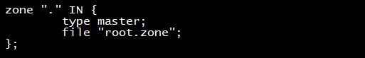
vim root.zone
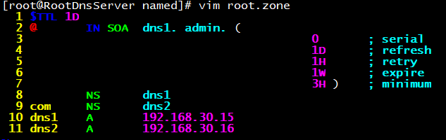
切换到Client测试根DNS服务器：
dig www.wxlinux.com @192.168.30.15
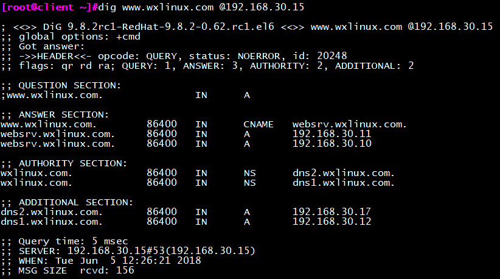
六、搭建**ISP**服务器
vim /etc/named.conf
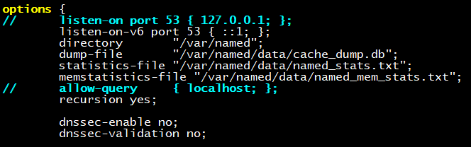
vim /var/named/named.ca
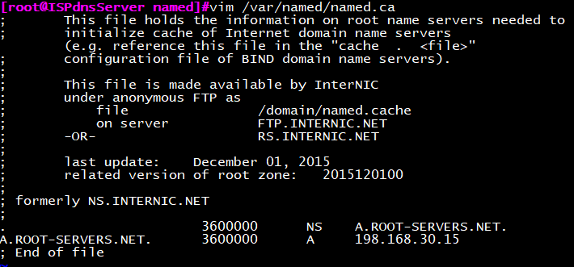
七、客户端进行最后测试
修改DNS
vim /etc/resolv.conf
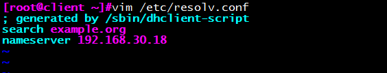
dig www.wxlinux.com
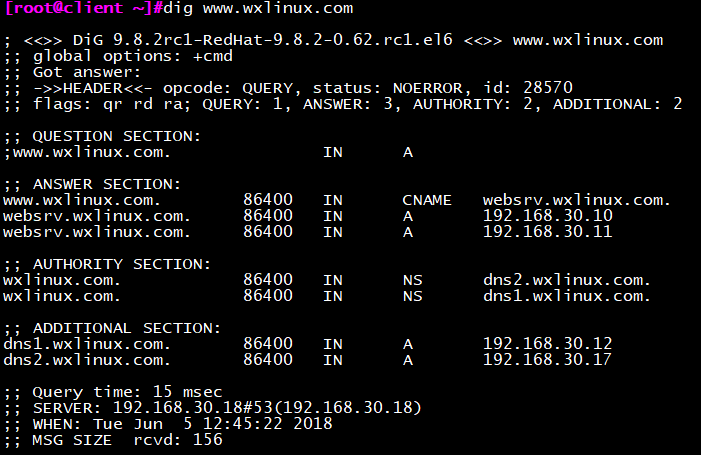
当访问www.wxlinux.com时，将随机指向两台web服务器之一
curl www.wxlinux.com
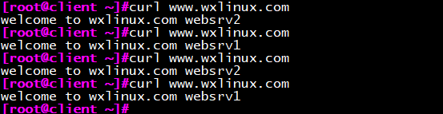